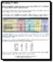

But your OCR software doesn’t just recreate text documents. Tables can be recreated with a high fidelity as well!
Reading tables is as good an application as capturing texts. You could easily take the point of view that reading tables makes even more sense than OCRing a text: retyping tables is about the most cumbersome typing job you can do. And when boredom kicks in, typos are right around the corner…
Advanced OCR software doesn’t make those mistakes because you can limit recognition to a numeric mode. Thus, you exclude possible confusion between “O” and ‘0’, between “B” and ‘8’ etc. (The numeric mode includes currency symbols such as dollar, pound, yen and the Euro symbol.)
The page analysis of advanced OCR software detects both “gridded” and “ungridded” tables. “Gridded” or “framed” tables have borders around the cells, “ungridded” tables don’t have any borders around the cells — they’re simply composed of text organized in columns.
Your OCR software analyzes the tables intelligently: they are recreated cell by cell inside your spreadsheet and encoded as table objects in your word processor files. Your state-of-the-art OCR software will even recreate the cell borders as found in your source document.
In all cases, the end result is the same: your numeric data are immediately ready for further processing with your spreadsheet.
User comfort shouldn’t be a problem either. With advanced OCR software, you can edit recognized tables with Microsoft Excel and save the recognition result in some table formats that typically include HTML tables and the “generic” CSV format (comma-delimited data). But you can also output tabular data to word processors and web browsers: tables gets reconstructed cell by cell and inserted as table objects in word processor files!
You can even save the scanned tables and ignore all other recognition results. All data inside the tables is recaptured; any data outside the table(s) — text blocks, graphics, bar codes etc. — is ignored. In this way, you can rid yourself of the text around the tables instantly, without any manual operations.

The new, XML-based worksheet of Microsoft Excel (*.xlsx) and the intermediary SpreadsheetML format offer sophisticated features. You can create one worksheet per page or one worksheet per table. Sounds complicated? It’s pretty simple, actually!
When one worksheet is created per scanned page and a page contains tables and text, all get placed on the same worksheet. When one worksheet is created per table, each table is placed in a separate worksheet and the recognized text (outside the tables) gets stored in yet another worksheet. Hyperlinks allow you to jump from the text to the tables and vice versa instantly.
Going places with the recognized text — More about Adobe Acrobat PDF output — Does OCR software format the text? — Does OCR software recognize tables? — Converting document collections
Home page — Intro — Scanners — Images — History — OCR — Languages — Accuracy — Output — BCR — Pen scanners — Sitemap — Search — Feedback – Contact